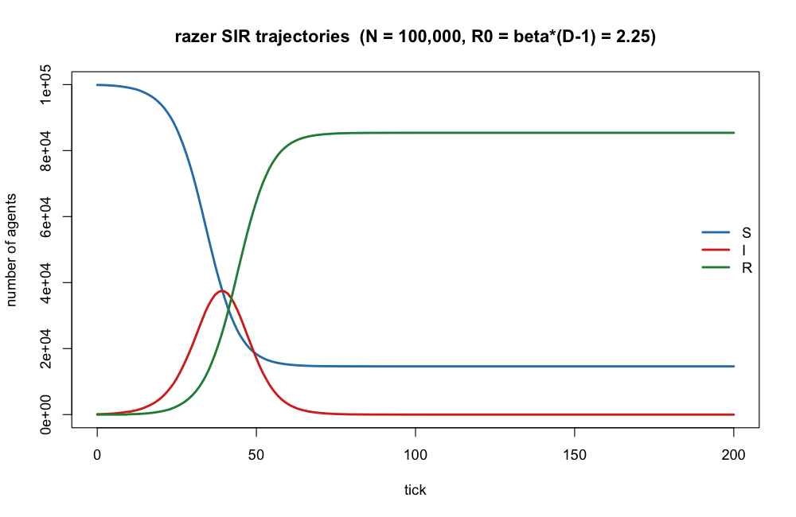
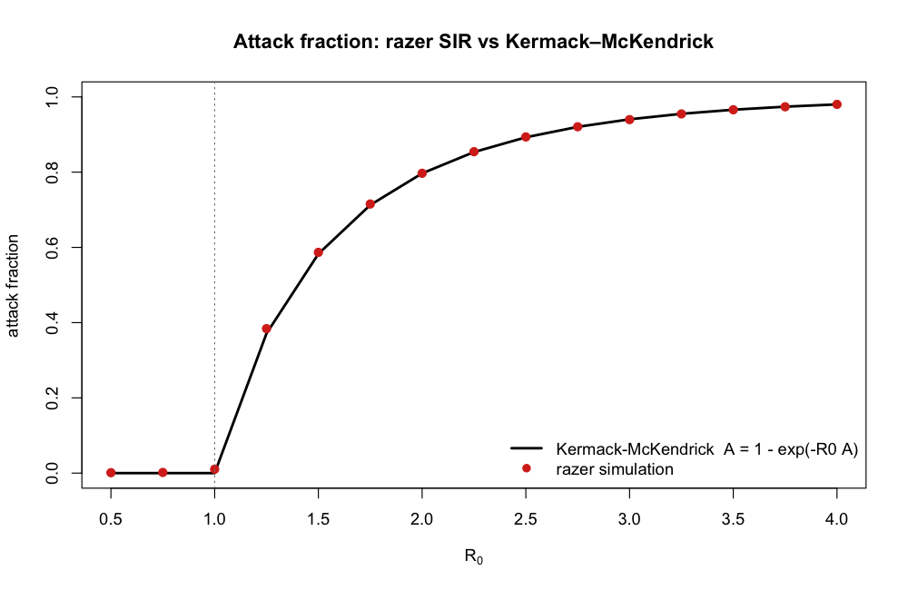
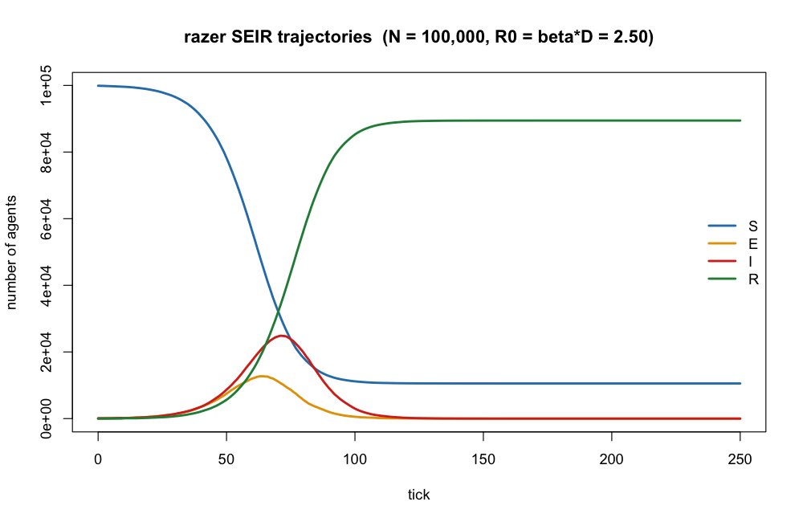
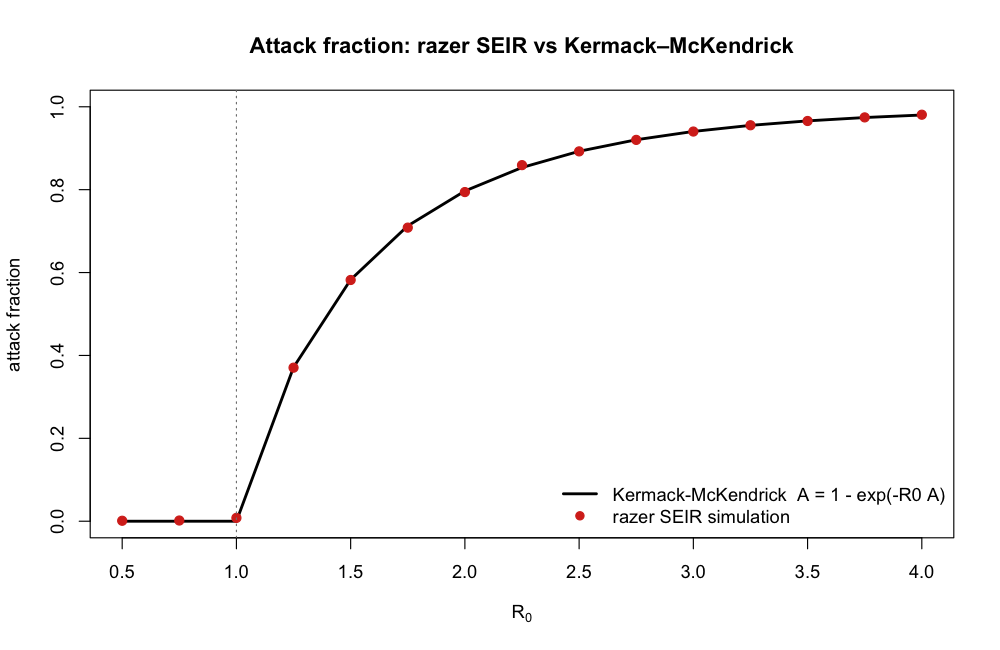

Rust-backed Agent modeling with Zero-copy struct-of-arrays for Eradication Research
razer is an R interface to the LASER (Light Agent Spatial modeling for ERadication) toolkit. It provides high-performance, Rust-backed data structures for large-scale spatial agent-based disease models. The name is a deliberate pun: “raze” means to eradicate completely, “razor” echoes LASER, and the trailing R anchors it to R.
Background: the Python LASER project
LASER is a Python framework developed at the Institute for Disease Modeling for building fast, composable agent-based disease models at national and global scale. Its core design insight is the struct-of-arrays (SoA) memory layout: instead of one object per agent, each agent property is a flat array of length capacity, and all active agents are a contiguous slice of that array. This layout is cache-friendly for the vectorised, Numba-JIT-compiled kernels that drive LASER’s performance.
razer ports this memory model to R, implementing the backing arrays in Rust (via the extendr framework) and exposing a LaserFrame object that mirrors laser.core.LaserFrame from the Python package.
Requirements
| Tool | Minimum version |
|---|---|
| R | 4.2 |
| Rust / Cargo | 1.65 (installed via rustup) |
Install Rust if you don’t already have it:
R package dependencies (installed automatically by install.packages or devtools::install()):
install.packages(c("devtools", "rextendr", "testthat"))Installation
# From a local clone
devtools::install("/path/to/razer")The first install triggers a full Cargo build; subsequent installs are incremental and much faster.
Quick start
library(razer)
# Create a frame: 1 000 agents, all active from the start
pop <- LaserFrame$new(1000L, -1L)
# Register properties (one value per agent)
pop$add_scalar_property("age", "integer", 0L)
pop$add_scalar_property("alive", "logical", TRUE)
# $ shorthand: read and write scalar properties directly
pop$age <- sample(0:80, 1000L, replace = TRUE)
pop$alive <- sample(c(TRUE, FALSE), 1000L, replace = TRUE, prob = c(0.99, 0.01))
# Activate 50 more agents (capacity must allow it)
large_pop <- LaserFrame$new(2000L, 1000L)
large_pop$add_scalar_property("age", "integer", 0L)
range <- large_pop$add(50L) # returns c(1001L, 1050L)
large_pop$age[range[1]:range[2]] <- sample(20:40, 50L, replace = TRUE)
# Vector property: capacity × nticks, column-major
# $S returns the full (count × ncols) matrix; $get_col("S", tick) is faster
# for single-tick access (one contiguous copy, no column gathering)
nticks <- 365L
pop$add_vector_property("S", nticks, "integer", 0L)
pop$set_col("S", 1L, rep(950L, pop$count)) # initial susceptibles
# Compact: remove dead agents
pop$squash(pop$alive) # in-place; count updated
# Sort agents by age (Rayon-parallel across all scalar properties)
pop$sort_by(order(pop$age))
# Describe the frame layout
cat(pop$describe())
LaserFrame API reference
LaserFrame uses the extendr environment-based dispatch: create an instance with LaserFrame$new(...), then call methods with $.
Construction
| Call | Description |
|---|---|
LaserFrame$new(capacity, initial_count) |
Create a frame. Pass initial_count = -1L to start fully populated. |
Metadata
| Call | Returns |
|---|---|
f$count |
Number of currently active entries (integer) |
f$capacity |
Fixed capacity set at construction (integer) |
f$scalar_names() |
Alphabetically sorted names of scalar properties (character) |
f$vector_names() |
Alphabetically sorted names of vector properties (character) |
f$vector_ncols(name) |
Number of columns in a vector property (integer) |
f$describe() |
Human-readable layout summary (character) |
Property registration
| Call | Description |
|---|---|
f$add_scalar_property(name, dtype, default) |
Add a 1-D property. dtype is "integer", "real", or "logical". |
f$add_vector_property(name, length, dtype, default) |
Add a 2-D property with length columns (e.g., number of ticks). |
Properties may not be added twice under the same name.
Scalar access
| Call | Description |
|---|---|
f$get(name) |
Return the active slice [1:count] as an R vector. |
f$set(name, values) |
Overwrite the active slice from an R vector of length count. |
f$prop |
Shorthand for f$get("prop"). |
f$prop <- values |
Shorthand for f$set("prop", values). |
Method names take priority over property names — if a property is named count, use f$get("count") explicitly.
Vector property access
| Call | Description |
|---|---|
f$get_col(name, col) |
Return column col (1-based) for active entries — a contiguous memory copy. |
f$set_col(name, col, values) |
Overwrite column col (1-based) for active entries. |
f$get_matrix(name) |
Return the full active portion as a (count × ncols) R matrix. |
f$prop |
Shorthand for f$get_matrix("prop") when prop is a vector property. |
Lifecycle
| Call | Description |
|---|---|
f$add(n) |
Activate n more entries. Returns c(start, end) (1-based, inclusive). |
f$squash(mask) |
Remove entries where mask is FALSE. Updates count in place. All scalar and vector properties are compacted consistently. |
f$sort_by(perm) |
Reorder active scalar properties by the 1-based permutation perm. Parallelised across properties via Rayon. Vector (time-series) properties are left unchanged. |
Memory layout notes
-
Scalar properties — backing array of length
capacity; active slice is[1:count]. -
Vector properties — backing array of
capacity × lengthelements stored column-major (R’s native order). Element[entry, col]lives at byte offsetentry + col * capacity. Columncol(all active entries for one time step) is a contiguous block, makingget_cola singlememcpy.
Epidemic model components
Beyond the LaserFrame data structure, razer provides composable per-tick step kernels for building SI / SIR / SEIR / SEIRS-family compartmental models, together with parameterized distributions (dist_normal(), dist_gamma(), dist_poisson(), …) for drawing state-timer durations such as incubation and infectious periods. See the function reference for the complete list.
Order of update operations
Call the transitions downstream-first within each tick — move agents out of a timed compartment before moving agents in, walking the disease-progression chain backwards:
| Model | Per-tick call order |
|---|---|
| SIR |
step_infectious_ir() → step_transmission_si()
|
| SEIR |
step_infectious_ir() → step_exposed_ei() → step_transmission_se()
|
| SEIRS |
step_recovered_rs() → step_infectious_ir() → step_exposed_ei() → step_transmission_se()
|
This keeps each compartment’s residence time equal to its configured duration: a newly exposed or infectious agent would otherwise be decremented in the same tick it arrives, shortening its period by a tick. See the model-composition help topic (?\model-composition``) for the full rationale and the SIR caveat.
Worked examples
The examples/ directory has two runnable scripts that build a model, plot its trajectories, and validate the simulated final attack fraction against the classic Kermack–McKendrick final-size relation A = 1 − exp(−R0·A). Both match the theory to within a few thousandths across the supercritical range. Run either with, e.g., Rscript examples/sir_attack_fraction.R.
sir_attack_fraction.R — SIR model


seir_attack_fraction.R — SEIR model


See examples/README.md for details, including why the effective R0 differs between SIR (beta·(D−1)) and SEIR (beta·D).
Development
Repository layout
razer/
├── R/
│ ├── extendr-wrappers.R # auto-generated by rextendr — do not edit
│ └── laser_frame.R # .onLoad hook: wraps void methods with invisible()
├── src/
│ ├── entrypoint.c # auto-generated C bridge
│ └── rust/
│ ├── Cargo.toml
│ └── src/
│ ├── lib.rs
│ └── laser_frame.rs # LaserFrame implementation
├── tests/testthat/
│ └── test-laser_frame.R
├── man/ # auto-generated Rd files
└── DESCRIPTIONBuilding
Regenerate R wrappers and compile the Rust library:
devtools::document()This calls rextendr under the hood, which runs cargo build and then regenerates R/extendr-wrappers.R and man/*.Rd from the Rust doc-comments.
For a release (optimised) build, set the environment variable before loading:
Running tests
From the R console or RStudio:
devtools::test()In RStudio you can also use the Build → Test Package menu item, or press Ctrl+Shift+T / Cmd+Shift+T.
From the command line:
Or using R’s built-in test runner:
Modifying the Rust source
Edit files under
src/rust/src/.-
Check compilation quickly without going through R:
-
Regenerate R wrappers and rebuild the shared library:
devtools::document() -
Reload and test:
devtools::load_all() devtools::test()
Rust panics (from assert!, panic!, or index out-of-bounds) are caught by the extendr C boundary and converted to R stop() errors, so they behave like normal R errors from the caller’s perspective.
License
MIT — see LICENSE.md.